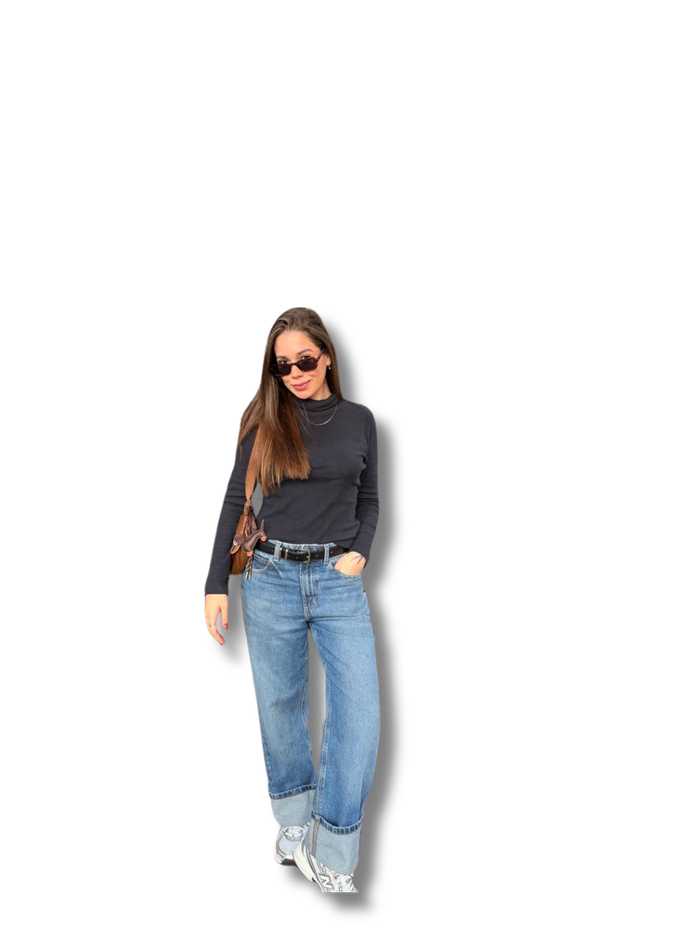

▶
Vídeos estratégicos criados para atender os objetivos da marca — vendas, posicionamento ou reconhecimento. Roteiro, storytelling e comunicação alinhados à identidade da empresa.

Portfólio 2026
UGC Creator
Conteúdos que fazem sua marca deixar de ser produto e vira presença na rotina.
Explorar portfólio
Tenho 26 anos, sou de São Paulo e atuo há mais de 7 anos com marketing estratégico e criação de conteúdo, com foco em comportamento do consumidor.
Fui dona de loja de roupa e foi ali que aprendi, na prática, como funciona a cabeça de quem compra: o que gera desejo, o que faz alguém parar, olhar e decidir "eu preciso disso". Hoje aplico esse olhar em cada conteúdo que crio.
Meu trabalho vai além de gravar um vídeo bonito. Eu penso estrategicamente em como fazer o consumidor final imaginar aquele produto na própria rotina antes mesmo de comprar — respeitando o branding e o tom de voz de cada marca.

Vídeos estratégicos criados para atender os objetivos da marca — vendas, posicionamento ou reconhecimento. Roteiro, storytelling e comunicação alinhados à identidade da empresa.

Vídeos curtos para anúncios, com foco total no produto. Edição simples, falando sobre dúvidas e características do produto e potencializando resultados.

Vídeos focados em vendas dentro do TikTok. Linguagem e edição naturais, com estrutura voltada para conversão: gancho, desenvolvimento e CTA.


Estudo da marca, histórico de conteúdos e momento atual para identificar oportunidades e direcionar a comunicação. Definição do direcionamento estratégico com base nos objetivos da marca. Validação e ajustes com a marca, incluindo reuniões quando necessário.
Gestão completa do projeto: prazos, formatos, volumes, contratos e alinhamento com orçamento e necessidades da marca. Desenvolvimento de roteiros e ideias alinhados à estratégia, com foco em conexão e performance.
Captação e execução dos conteúdos conforme o planejamento, com consistência e qualidade na entrega. Finalização com suporte de equipe especializada, garantindo comunicação eficiente e alto padrão visual.
Envio final dos conteúdos.
Observação: métricas completas são apresentadas conforme o escopo do projeto.

Conteúdos que fazem sua marca deixar de ser produto e vira presença na rotina.
brunaquino.mkt@gmail.com clique para copiar